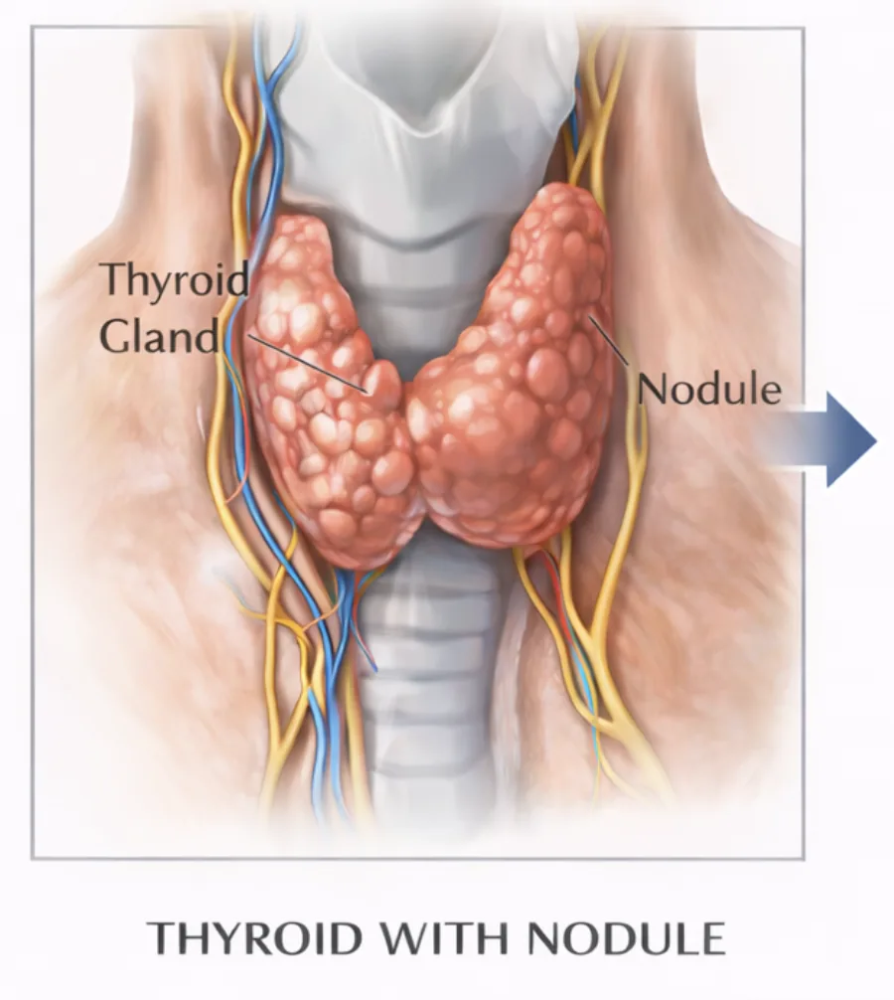

ENDOCRINE SURGERY
Thyroid Surgery
Surgical procedures of the thyroid gland
1-1.5 h
Duration
1-2 Days
Hospital Stay
1 Week
Recovery
ENDOCRINE SURGERY
Surgical procedures of the thyroid gland
A thyroid diagnosis can be unsettling – but with the right expertise, the procedure is safe and gentle.
All operations are performed minimally invasively with intraoperative neuromonitoring to protect the recurrent laryngeal nerve.
The Procedure
Partial or complete removal of the thyroid gland. Indications: nodules, enlargement (goiter), hyperthyroidism, or carcinoma. All procedures are minimally invasive with intraoperative neuromonitoring to protect the recurrent laryngeal nerve.

Why This Procedure
Outcomes
Precise surgical treatment of all thyroid conditions using state-of-the-art technology.
Intraoperative neuromonitoring is an integral part of every thyroid operation.
Maximum protection of the recurrent laryngeal nerve through continuous monitoring throughout the entire procedure.
Eligibility
“In thyroid surgery, protecting the recurrent laryngeal nerve is paramount. Neuromonitoring is my standard practice.”Univ.-Prof. Dr. Gerhard Prager
Frequently Asked Questions
Surgery is recommended for suspicious or growing nodules, for hyperthyroidism that cannot be controlled with medication (e.g., Graves' disease), for significant enlargement (goiter) with compressive symptoms, or for thyroid carcinoma.
Through intraoperative neuromonitoring, the recurrent laryngeal nerve (voice nerve) is continuously monitored throughout the entire procedure. This enables precise identification and maximum preservation of the nerve.
After a total thyroidectomy, lifelong thyroid hormone replacement (L-thyroxine) is necessary. After a hemithyroidectomy, the remaining lobe often takes over hormone production, so tablets are frequently not required.
Call us at +43 660 489 58 51 or use the contact form. During the initial consultation, we will discuss together which procedure is optimal for you.

YOUR SURGEON
IFSO World President 2023/2024. Over 9,900 procedures. Professor at MedUni Vienna.
Questions about thyroid surgery?
Book Appointment →An initial consultation without obligations – where we discuss together which path makes the most medical sense.
+43 660 489 58 51 Schedule a Personal ConsultationBy phone appointment